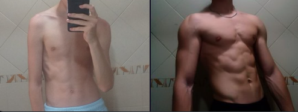

La mala vida que lleve en mi infancia y adolescencia llego a provocar que con 16 años dejara los estudios totalmente, pero a partir de ahi empezo a cambiarme la vida para bien:
Cuando deje los estudios descubri un juego llamado Fortnite el cual competí por 5 años llegando a ganar:
Toda esta etapa me llevo a ganar mucho dinero pero esta etapa llego a su fin ya que fisicamente mi cuerpo estaba muy mal por lo que dio paso a mi siguiente logro
Cuando me retiré del competitivo pesaba 43 KG cosa que en 6 meses puede cambiarlo y conseguir un peso de 60KG.
A la vez que hacía mi cambio fisico retomé los estudios y a día de hoy en 3 años he conseguido: